scconfig¶
Configuration and system management frontend.
Description¶
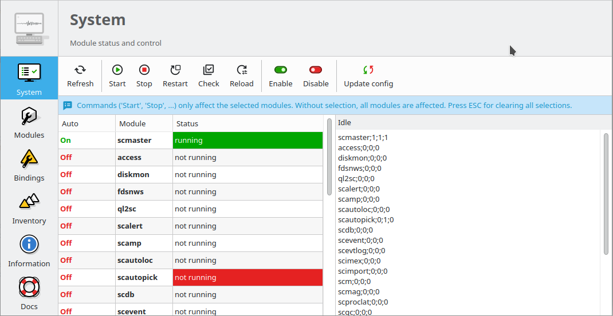
System panel¶
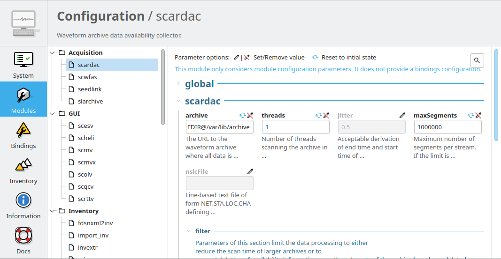
Modules panel¶
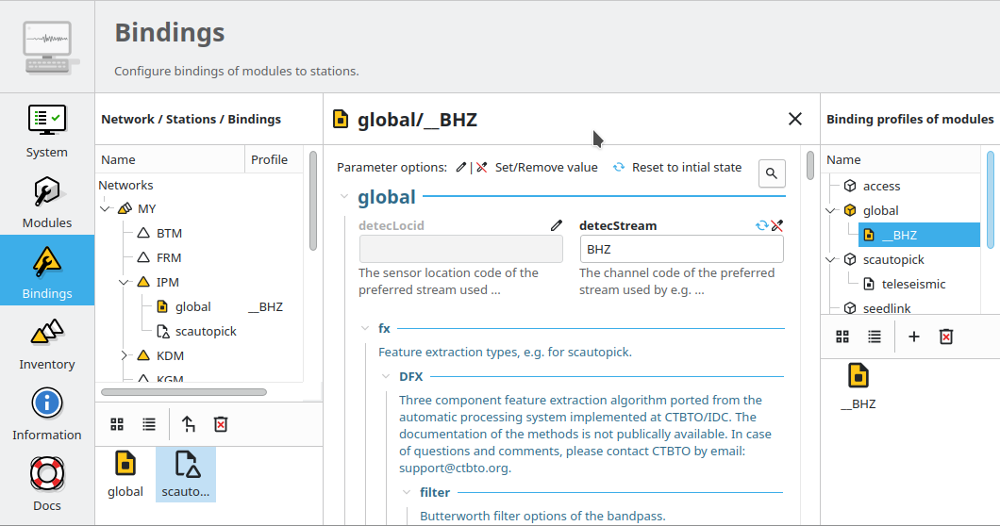
Bindings panel¶
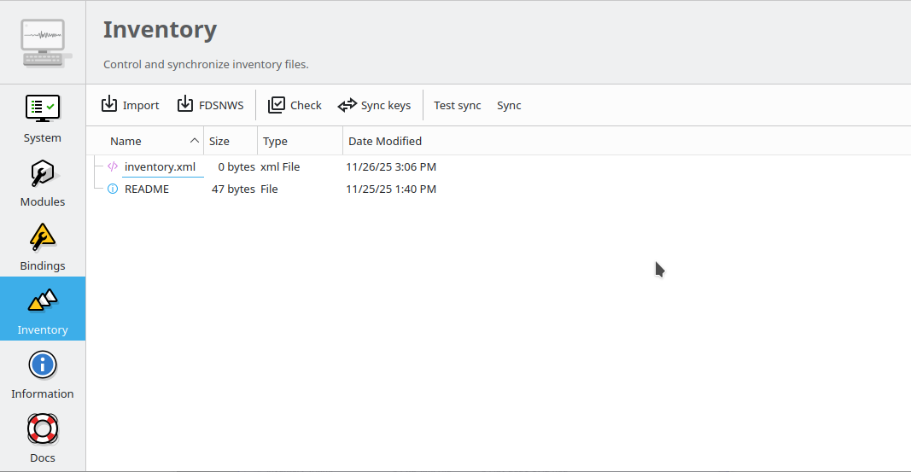
Inventory panel¶
scconfig is a graphical user interface which allows to
Control modules (start/stop/check/enable/disable) and access logging file,
Create and adjust the configuration of modules and bindings for all configurable SeisComP modules including all trunk and standalone modules,
Import, check, synchronize and remove station meta data/inventory,
Retrieve information about the installed SeisComP system,
Access the documentation and the changelog.
These actions are available in separate panels which are described below.
The modules are usually programs part of the SeisComP system and have two distinct types of configuration (see section Configuration for a more complete documentation):
Modules configuration stored in configuration files like
scautopick.cfg.Bindings, that are sets of parameters to configure how the module will treat a certain station. I.e. station-specific configurations per module. Bindings can be configured using profiles, or directly per station. A profile is a named set of parameters for a certain module that can be conveniently attributed to more than one station. Using profiles makes it easier to maintain large number of station configuration. When two stations are configured by the same profile, both will have the same parameter set for a certain module.
scconfig does not know anything about the SeisComP database. It actually only
reads and writes the content of files from etc/ and
~/.seiscomp folder. scconfig allows you to manage this information in an
organized and friendly manner and supports you in generating clean
configurations and operating modules. Also, it relies on other applications
like the proper seiscomp tool to complete the system configuration.
First start¶
If started for the first time, scconfig will ask the user to setup essential configurations.
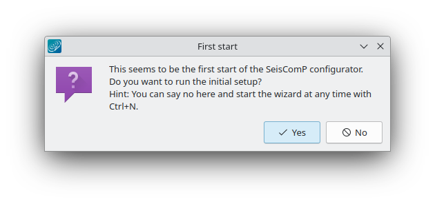
The setup steps will allow you to (read also Getting Started with SeisComP):
Configure general IDs such as the agency ID which will be written to the global module configuration in
@SYSTEMCONFIGDIR@/global.cfg,Setup a SeisComP database,
Configure the scmaster module with the SeisComP database (
@SYSTEMCONFIGDIR@/scmaster.cfg).
If done already with the command line interface,
this step can be skipped. Whether the setup was done before is indicated by
the presence of the file var/run/seiscomp.init.
If you wish to run the setup, continue by pressing Yes. The wizard will be started and will configure exactly the same parameters as described in Getting Started with SeisComP.
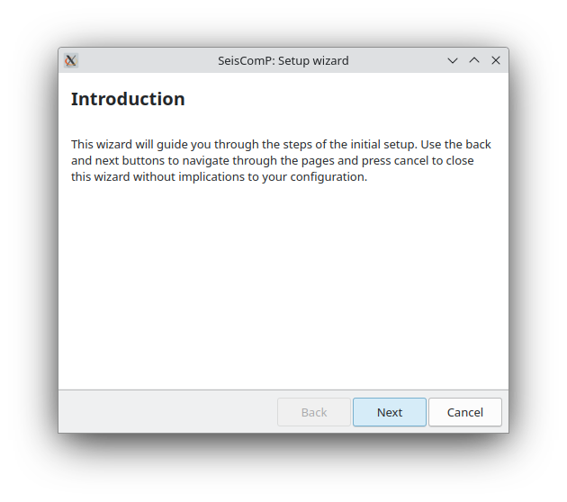
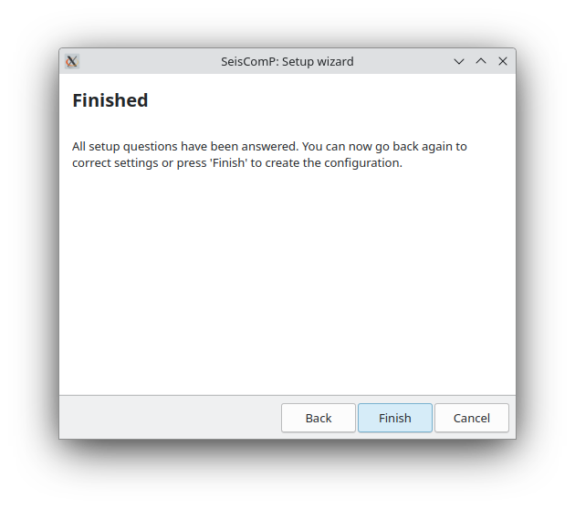
Pressing Finish will run the setup and show the progress. Any issue requiring actions or causing the setup to fail will be reported. A success message is printed upon complete setup.
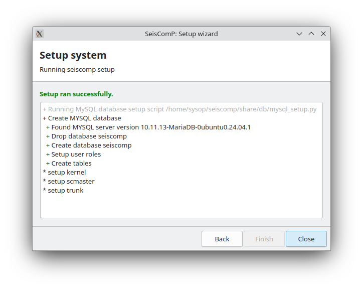
Pressing Close will launch the main configuration window.
Options¶
By command-line options scconfig supports you in quickly navigating to panels, modules and stations. Read the documentation of command-line options to learn about your options or call:
scconfig -h
Main Window¶
The layout of the main window is always the same regardless of what panel is selected.
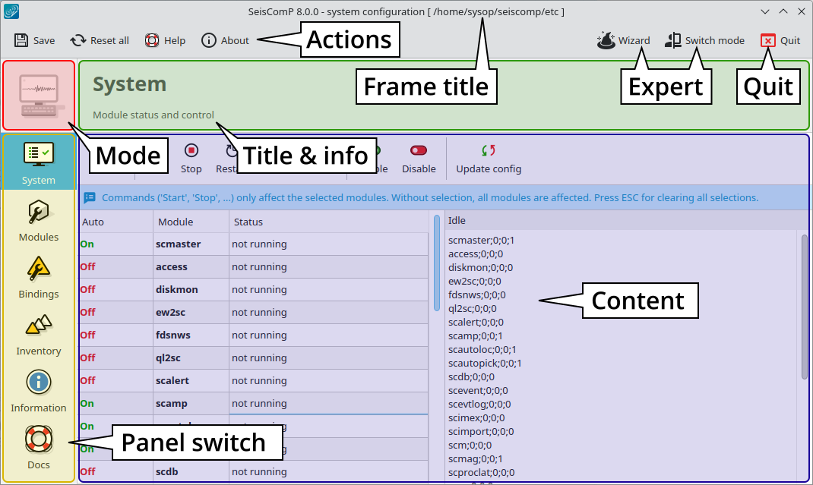
Main window of scconfig: Frame title, action buttons, mode indicator (red), panel selection (yellow), panel title and information (green), panel content (blue).¶
The window is divided into main areas:
Frame title,
Buttons for common and expert actions,
Red: Mode indicator, system and user mode are indicate by a screen and an avatar, respectively,
Yellow: Panel switch,
Green: Title and description of current panel,
Blue: The content and interactive screen of the current panel.
Frame title¶
The frame title shows general information on the current SeisComP version and the configuration mode (system or user) along with the directory to store module configurations. The hostname is additionally displayed when starting scconfig on a remote host.
Actions¶
Saving (Ctrl+S): Store changed parameters and value in configuration in files.
Reset all (Ctrl+R): Load the configuration currently available in files resetting all unsaved changes.
Help (F1): Open the HTML documentation of scconfig.
Wizard (Ctrl+N): Start the inital setup.
Switch mode: Change the mode of configuration, see section scconfig-mode. The current mode is indicated by the mode area:
screen: System mode
avatar: User mode
Quit: Finish scconfig.
System panel¶
The system panel is a graphical frontend for the seiscomp script. Read also section System management for more details.
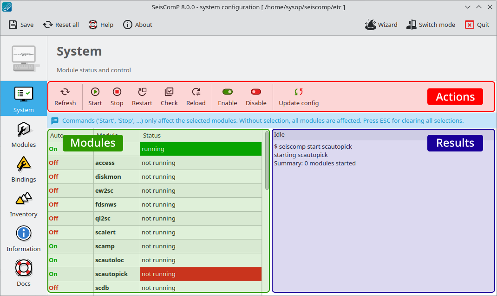
System panel: Overview¶
It is divided into 3 parts: the toolbar on the top (red), the module list (green) and the log window (blue). The log window shows the output of all external programs called such as seiscomp. The standard output is colored black and standard error is colored brown.
Note
Due to the buffering of the GUI it can happen that standard output and standard error logs are not in perfect order.
Actions¶
The toolbar gives access to the available operations. All operations will affect the currently selected modules (rows). If no row is selected, all modules are affected and the corresponding call to seiscomp <arg> is done without any module. Also read the documentation of seiscomp for more details.
- Reload
Updates the current module state. The action is useful in case the module state was changed by external actions. Calls seiscomp --csv status.
- Start
Starts all selected modules. If no module is selected, all enabled modules are started. Calls seiscomp start.
- Stop
Stops all selected modules. If no module is selected, all started modules are stopped. Calls seiscomp stop.
- Restart
Restarts (stops and starts) all selected modules. If no module is selected, all started modules are stopped and all enabled modules are started. Calls seiscomp restart.
- Check
Tests all selected modules if they have stopped unexpectedly. Such modules are started. If no module is selected, all started modules are checked. Calls seiscomp check.
- Reload
Reloads the configuration of all selected modules. If no module is selected, the configuration of all modules is reloaded. The action is only applicable to selected modules. Calls seiscomp reload.
- Enable
Enables all selected modules for autostart when running seiscomp start or seiscomp restart. At least one module must be selected. Calls seiscomp enable.
- Disable
Disables all selected modules for autostart. At least one module must be selected. Calls seiscomp disable.
- Update config
Starts scmaster, synchronizes the inventory and sends configuration of bindings and standalone modules to the messaging. Perform this important action after the module configuration or bindings have changed and before restarting the affected modules. Calls seiscomp update-config.
Important
For applying an action to all modules deselect any modules selection pressing ESC and press the corresponding action button. When one or multiple modules are selected, the action is only applied to those.
Diagnosing¶
For diagnosing module performances you may read module log files. The latest log files can be directly accessed from the system panel:
Right click on the module name for which to read the log entries.
Select the type of log to read. Only available logs can be selected. Normally you would want to read the module log which is by default written per module to
$HOME/.seiscomp/log/[module].log.
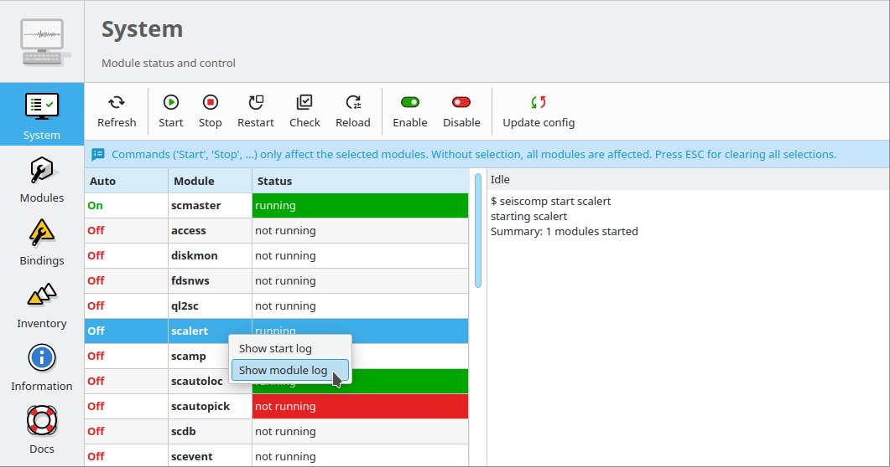
Right-click on a module to open log files¶
Hint
The logging level is configurable per module by logging.level.
Modules panel¶
The Modules panel allows the configuration of all registered modules.
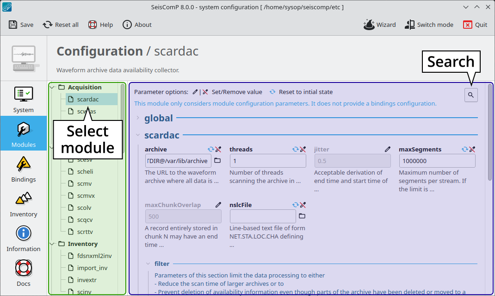
Modules panel: Overview¶
The left/green part shows the list of available modules grouped by defined categories and the right/blue part shows the current active module configuration. The active configuration corresponds to the selected module in the list.
Adjust module configuration¶
Read section Module configuration for details on module configuration. See also section Editing parameters for further information on editing parameters.
Adjust module configuration¶
Read section Module configuration for details on module configuration. See also section Editing parameters for further information on editing parameters.
System/user mode¶
The module configuration content that is displayed depends on the current configuration mode. Two modes exist:
System mode: Module configurations are stored in files per modules like
etc/<module>.cfg. This is the default and usually, the preferred configuration mode.User mode the files are stored as
$HOME/.seiscomp/<module>.cfg. Parameter values set in user mode override system-mode configurations.
You may change the mode by pressing the action button Switch mode (section Main Window). The mode is indicated by the mode indicator widget (section Main Window).
Note
Bindings configurations (section Bindings panel) are not affected by mode changes.
It may happen that a configuration parameter is editable but editing will not have any affect on the module configuration. This is caused by the different configuration stages. If the system configuration is active but a parameter has been set in the user configuration it cannot be overridden in the system configuration. The user configuration is always of higher priority. scconfig will detect such problems and will color the input widget red in such situations.
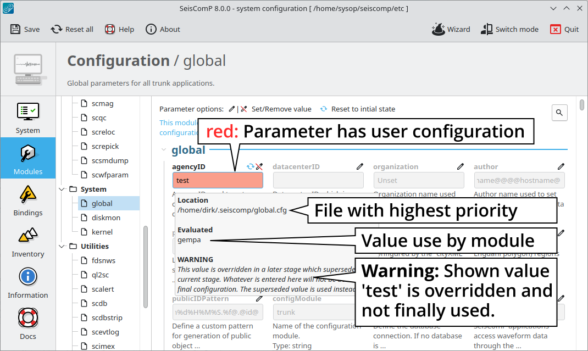
Warning in case a value is overridden by user configuration.¶
The value in the edit widget will show the currently configured value in the active configuration file but the tooltip will show the evaluated value, the location of the definition and a warning.
Bindings panel¶
The binding panel configures a station for a module providing station-specific configuration such as data acquisition or processing. Read section Bindings configuration for details on bindings configuration. See also section Editing parameters for further information on editing parameters.
You may configure station bindings or binding profiles. The profiles are typically applied to a set of stations. Any change in the profile parameters is applied to all stations bound to it.
Hint
Working with bindings profiles allows to maintain a single set of binding parameters for one or multiple stations. Station bindings are useful if a set of binding parameters are applied only to a single station. Otherwise configure binding profiles. Profiles are therefore usually preferred over station bindings.
Creating or modifying bindings or bindings parameters requires to run seiscomp update-config and to restart the affected modules in order for the changes to take an effect.
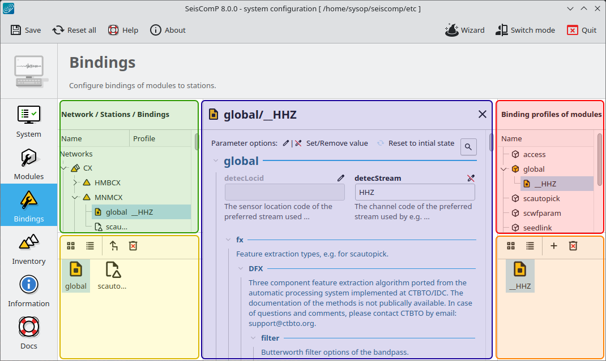
Bindings panel: Overview¶
The binding panel is separated into 3 main areas:
Station tree (green + yellow). In the upper (green) part you may select an item of which the content is displayed in the lower (yellow) section.
Binding parameter content (blue) where you may adjust parameter values.
Module tree (red + orange). In the upper (red) part you may select a module of which the profiles are displayed in the lower (orange) section.
The station tree (green) shows a tree of all available networks and their stations. Each stations contains nodes of its configured bindings. The lower view (yellow) represents the content of the currently selected item in the station tree.
The binding parameter content (blue) shows the content of a binding and is similar to the module configuration content. A search function as for module configuration parameters exists. See section Editing parameters for further information about this panel.
The module tree contains all modules which can be used along with bindings. The upper (red) window contains the modules and all available binding profiles for each module and the lower (orange) part shows all binding profiles of the currently selected module. This view is used to add new profiles and delete existing profiles.
Profiles¶
Create a profile¶
For creating a binding profile select a module in the module tree (red) and right-click on the module or select the “add” button in the lower (orange) panel. Provide a descriptive name. Clicking on the name of the profile opens the profile allowing to adjust the parameters.
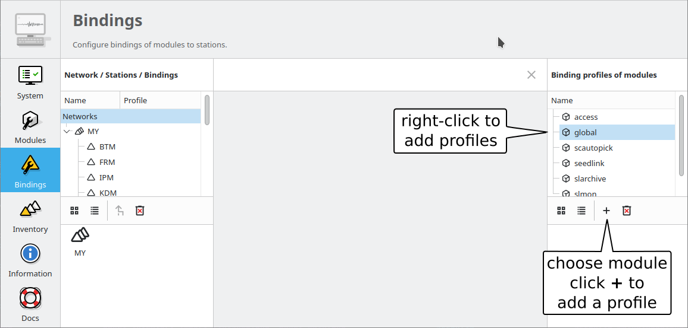
Create a binding profile¶
Create bindings¶
Assigning a binding profile to one or more stations creates one or more bindings. To assign a binding profile to
A single station,
A single network including all stations or
All networks.
Select a profile by mouse click
Drag the selected profile from the right part (red or orange) to the target in the left part (green or yellow).
Multi-selection of networks and stations is supported by holding the keys Shift or Ctrl while clicking on a network or a station.
It is not possible to drag and drop multiple profiles with one action.
Station bindings¶
To create an exclusive station binding for a module, it must be opened in the binding view (yellow) by either selecting a station in the station tree (green) or opening/clicking that station in the binding view (yellow). The binding view will then contain all currently configured bindings.
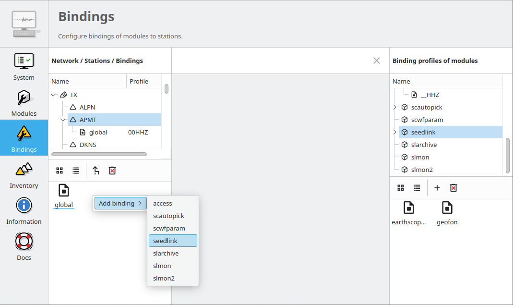
Add a station binding¶
Clicking with the right mouse button into the free area will open a menu which allows to add a binding for a module which has not yet been added. Adding a binding will activate it and bring its content into the content panel.
To convert an existing profile into a station binding, right click on the binding icon and select . The existing profile will be converted into a station binding and activated for editing.
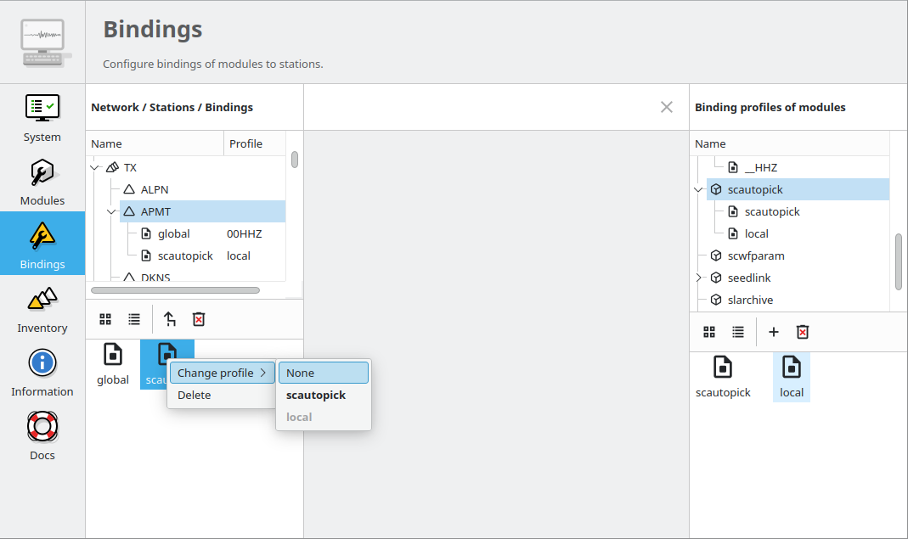
Convert a binding profile to a station binding¶
Reversely, you may select a profile for binding it to a station.
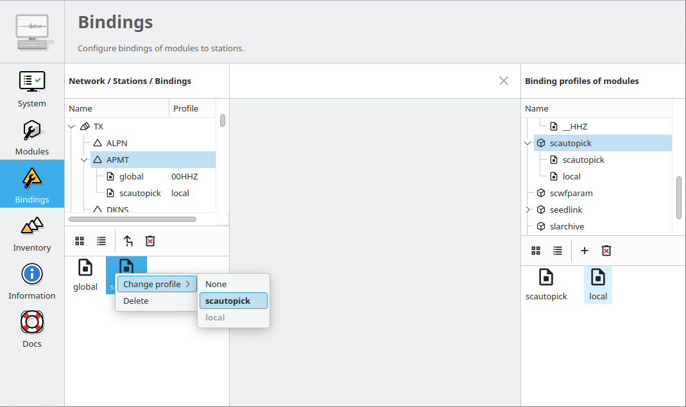
Convert a station binding to a binding profile. The current configuration is highlighted.¶
Apply bindings¶
The bindings parameters must be additionally written to the database or as for a standalone module converted to the specific module configuration by updating the configuration. You may update configuration for all modules or just the specific one. To this end, change to the System panel select the specific module or none and press the button “Update configuration”.
Alternatively, execute the seiscomp script on the command line for all or the specific module:
seiscomp update-config
seiscomp update-config module
Editing parameters¶
The content panel of a configuration is organized as a tree. Each module/binding
name is a top-level item and all namespaces are titles of sections which can be
expanded or collapsed.
Namespaces are separated by dot in the configuration file, e.g.
scautopick.cfg which also reads global.cfg would end up in a tree
like this:
+ global
| |
| +-- connection
| | |
| | +-- server (global.cfg: connection.server)
| | |
| | +-- username (global.cfg: connection.username)
| |
| +-- database (global.cfg: database)
|
+ scautopick
|
+-- connection
| |
| +-- server (scautopick.cfg: connection.server)
| |
| +-- username (scautopick.cfg: connection.username)
|
+-- database (scautopick.cfg: database)
The Figure Content panel layout describes each item in the content panel.
When configuring module configuration parameters (in contrast to bindings), the parameters can can be set in system and user mode. While system mode is the default and usually used, parameters set in user mode override system mode. Read section scconfig-mode for the details.
Searching¶
Searching parameters by name, value or description (tooltip) in the modules configuration panel is easy by the advanced search function:
Click on the lens in the parameter section or press Ctrl+F for activating the search mask.
Enter the string you wish to search for.
Hit enter to search. The first match is highlighted.
Once a string is found, you may continue to search up and down the list of matches by clicking on the arrow up and down buttons, respectively.
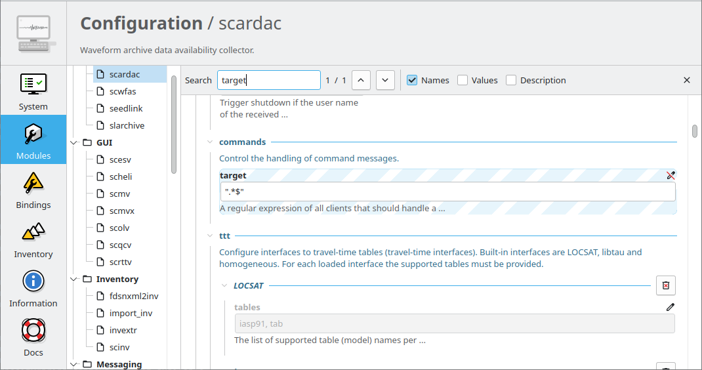
Advanced search function. The section containing a match is highlighted.¶
Adjust values¶
Without further configuration, the parameters show the currently loaded value. This may be the default value or a value previously loaded from global configuration. The content panel shows information and actions for adjusting parameter values.
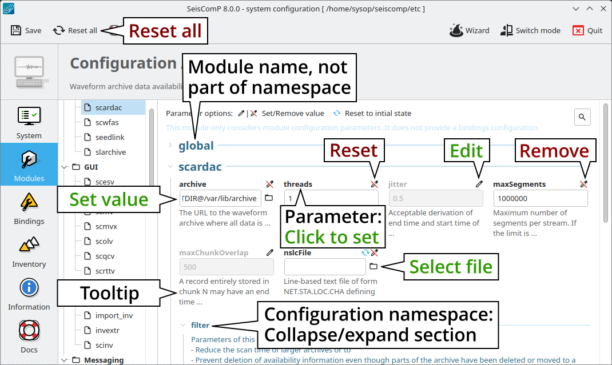
Content panel layout¶
In order to adjust a module or binding parameter:
Click on the edit button above the parameter field (pen) to activate the value field.
Enter or select the value in either way:
Enter the value directly into the value field. While entering, the parameter is evaluated.
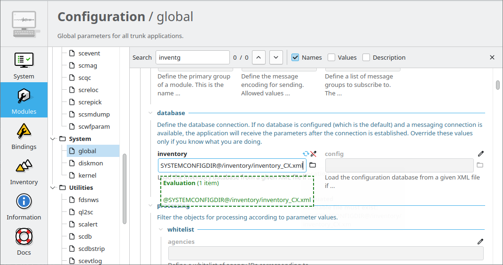
Value field: Enter the value into the open field¶
Parameter values may be long and difficult to enter into the value field. Instead of entering the value in the value field you may alternatively click on the parameter name which opens a line editor for entering the parameter. Apply your changes and click OK to accept the changes. You may copy and paste any text string from the editor window. For copying the parameter along with its value elsewhere, click on Copy parameter.
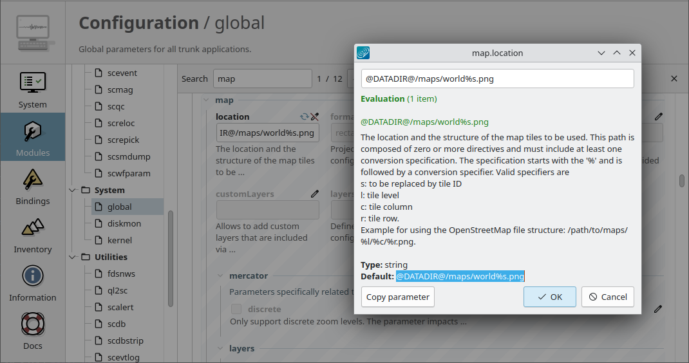
Line editor: Enter the value into the open field¶
For files and directories a selection button may be visible. Click on the button to select the file or directory.
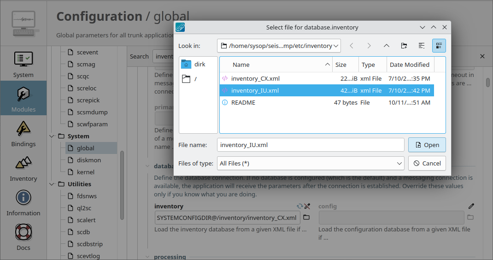
File and directory selector¶
Save the configuration: Click on the Save button or press Ctrl+S.
To finally apply the change you need to restart the module. In case bindings were changed, update the configuration is required before restarting. Navigate to the System panel for these actions.
You may later revert changes:
Remove a value effectively returning to default by pressing the remove button (pen with red line).
Before saving a changed value, you may reset this value to the previously saved state by pressing the reset button (blue circular arrows).
Revert the changed values of all parameters to the saved stated by pressing Reset all (Ctrl+R).
Evaluation¶
The content of the input field (except for boolean types which are mapped to a simple checkbox) is the parameter value. While typing an evaluation box pops up which contains the parsed and interpreted content as read by an application. It shows the number of parsed list items, possible errors or warnings and the content of each list item. The full list of value types and options to be tested is documented in the table of description parameters.
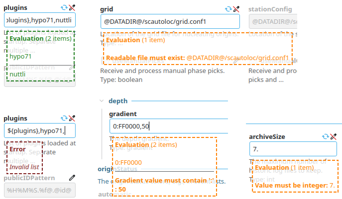
Examples of value syntax evaluation¶
Inventory panel¶
The inventory panel allows to import, check and synchronize inventory files as
well as to inspect the content or to rename or remove the files. The panel shows
a list of inventory XML files located in folder etc/inventory. Only
SCML files can be used as source for inventory data but various importers
exist to integrate inventory data from other formats. After the first start
the list is empty and contains only a README file.
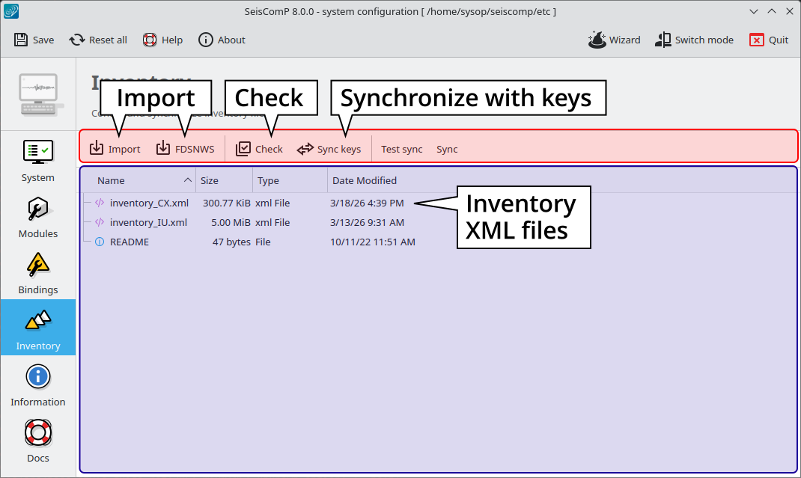
Inventory panel: List of files and actions¶
Importing station meta data is outlined in the tutorial on adding a station.
Servers running FDSNWS [8] as operated at GEOFON [9] or other data centers [6] are modern sources of inventory information. In scconfig you may fetch inventory directly from FDSN servers. Alternatively, you may navigate to such servers, download the inventory files and integrate the into SeisComP. Both ways are supported by scconfig.
Depending on configuration and architecture, FDSN servers provide inventory in SCML and/or FDSN station XML [5] but other sources may provide other formats. SeisComP supports reading inventory in a variety of different formats such as:
Ultimately, the inventory must be converted into SCML which is supported by scconfig.
Warning
Ensure to provide full inventory including responses for the time period of interest for data processing. Waveform data without corresponding inventory cannot be processed.
Toolbar actions¶
The toolbar supports various actions:
- Import
You may upload and integrate the inventory from file in any supported original format. Read section Import from file.
- FDSNWS
You may connect to any FDSN server providing station information and integrate the requested meta data into your SeisComP configuration. Read section Import from FDSNWS.
- Check
The inventory is checked for issues including inconsistencies which are reported. The tests are based on scinv and listed in the documentation of this module. Adjust sensitivity by configuring scinv.
The equivalent command-line action is
scinv check- Sync keys
This action is part of sync but can be called also standalone. It merges all inventory XML files and creates key files in
etc/key/station_*if a key file does not yet exist. Existing key files are not touched unless the station is not part of the inventory anymore.The equivalent command-line action is
scinv keysAs a result, all stations in inventory will have a corresponding key file and each key file will have a corresponding station in inventory.
- Test sync
The inventory XML files are not used directly with SeisComP. They need to be synchronized with the database first (see Station meta data). Synchronization needs to merge all existing XML files and create differences against the existing database tables. While merging conflicts can occur such as duplicate stations with different content (e.g. different description). This action is a dry-run of the actual synchronization. It performs merging and creates differences but does not send any update. This actions is useful to test all your existing inventory files before actually modifying the database.
The equivalent command-line action is
scinv sync --test
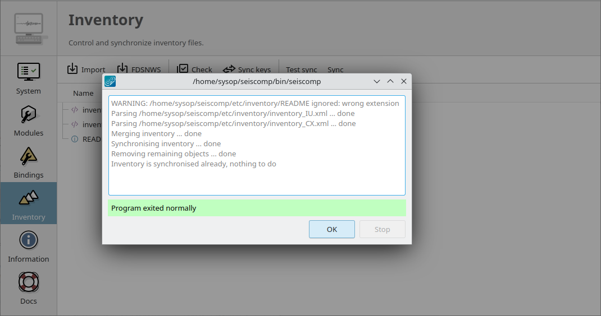
Synchronize inventory: Success¶
- Sync
Almost identical to Test sync but it does send updates to the database and additionally synchronizes key files and resource files.
The equivalent command-line action is
scinv sync
Sync and Sync keys will cause a reload of the configuration to refresh the current binding tree (see Bindings panel).
Import from FDSNWS¶
Inventory files can be directly imported from FDSN server by pressing the FDSNWS button in the toolbar on the top. Pressing the button will open a popup allowing to enter the FDSN server address and the inventory constraints. Include responses and set the time period by Start and End. Unset values do not impose any limit. When done
Press Fetch
Inspect the stream table
Press OK to download and integrate the inventory.
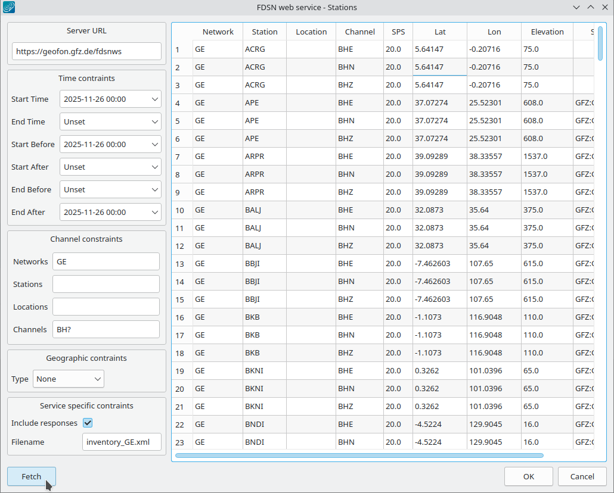
Import inventory: After fetching from FDSN server and before integration the stream list can be inspected.¶
Hint
File names must end on .xml. It is recommended to use consistent file
names, e.g., inventory_[networkCode].xml.
Import from file¶
External inventory files can be imported by pressing the Import button in the toolbar on the top. Pressing the button will open a popup allowing to select for input format.
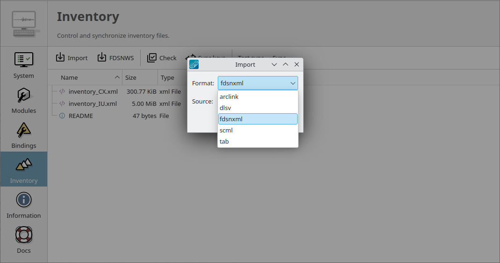
Import inventory: File format selection¶
If fdsnws is selected, the source location should then point to the FDSN stations XML file downloaded before.
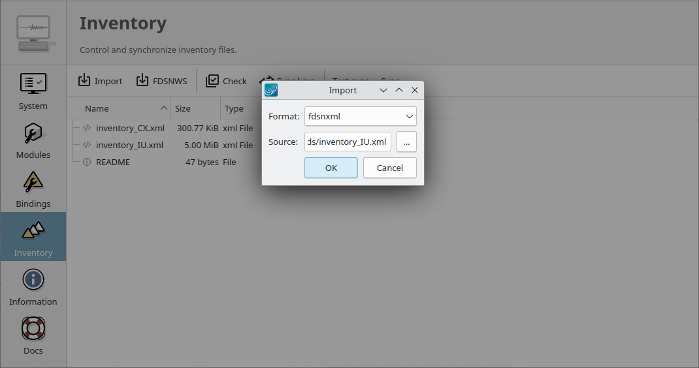
Import inventory: File selection¶
If successfully imported a window will popup with the execution result and the import output.
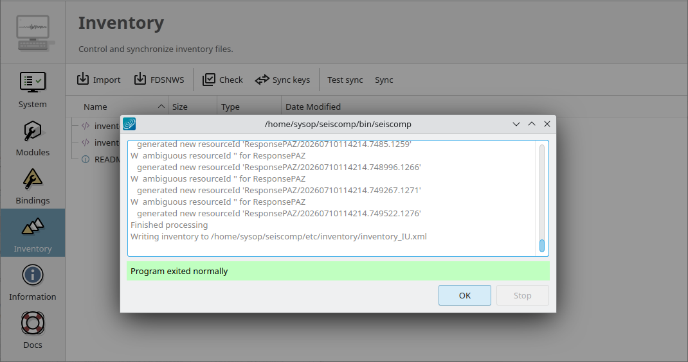
Import inventory: Success¶
After closing the popup, the imported inventory file will show up in the list of files. Right-clicking a file allows:
Checking (quality control),
Renaming,
Deleting,
Inspecting the content of
the file.
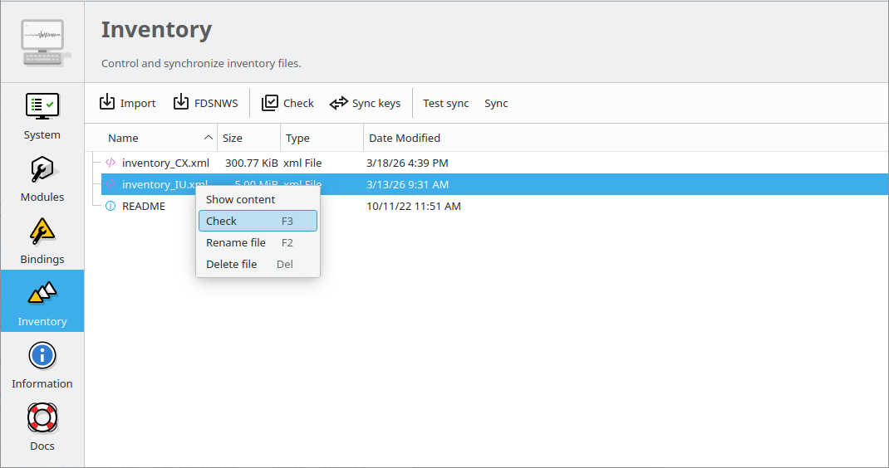
Right-click on file name to select actions on the file¶
Hint
File names must end on .xml. It is recommended to use consistent file
names, e.g., inventory_[networkCode].xml.
Information panel¶
This panel shows information about the SeisComP environment including system variables and the SeisComP variable related to the currently executed instance of scconfig.
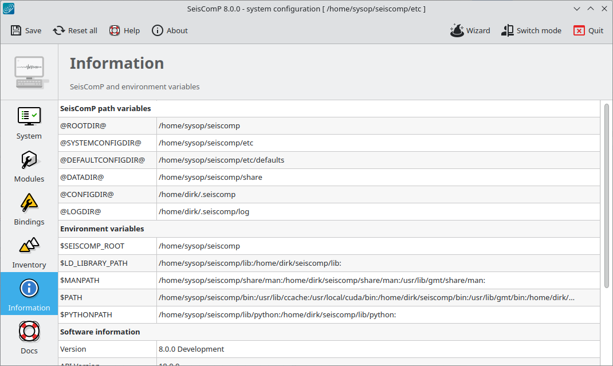
Information panel showing variables and software information¶
All SeisComP variables can be used as placeholders in most of the configuration parameters which define directories or files. The variables are encapsulated by @. Example:
autoloc.grid = @CONFIGDIR@/autoloc/local.grid
Documentation and changelog¶
Access the documentation and the changelog of any installed package from the Docs panel. Double-click on the red or blue button to open the documentation or the changelog, respectively.
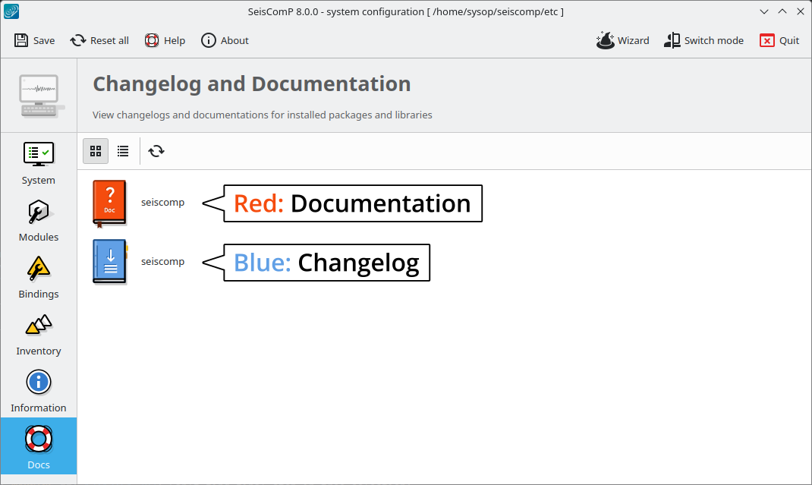
Shortcuts / Hotkeys¶
Hotkey |
Description |
|---|---|
General |
|
1 |
Switch to System panel |
2 |
Switch to Modules panel |
3 |
Switch to Bindings panel |
4 |
Switch to Inventory panel |
5 |
Switch to Information panel |
6 |
Switch to Docs panel |
Ctrl + N |
Start wizard for setting up initial global parameters, database and messaging |
Ctrl + Q |
Quit scconfig. Changed parameters may be saved file before eventually quitting. |
Ctrl + R |
Reset all changed parameters to values saved on disk |
Ctrl + S |
Save parameter values |
F1 |
Open locally installed HTML documentation of scconfig |
Bindings panel |
|
Ctrl + F |
Search parameters and descriptions |
Module panel |
|
Ctrl + F |
Search parameters and descriptions |
Inventory panel |
|
Del |
Delete selected file |
F2 |
Rename selected file |
F3 |
Check the selected file executing scinv check |
Command-Line Options¶
scconfig [options]
Generic¶
- -h, --help¶
Show help message.
Verbosity¶
- --debug¶
Execute in debug mode. Equivalent to --verbosity=4 --console=1 .
- -V, --version¶
Show version information.
Options¶
- -m, --module arg¶
Type: string
Name of module for which to open the configuration at startup given by the module name, e.g. scautopick. Requires --panel and is supported by the Modules and Bindings panels. In the Bindings panel all profiles of the module are shown and, when used with --station, the parameters for that station also show.
- -p, --panel arg¶
Type: string
Panel to open at startup given by its number, e.g. 2, or its name, e.g. Modules. The number corresponds to the panel shortcut key.
- --parameter arg¶
Type: string
Name of parameter or parameter section to navigate to at startup given by its full name, e.g., connection.server or database. Requires --panel and -module for Modules panel or --panel, --module and --station for Bindings panel.
- -s, --station arg¶
Type: string
Station to show the bindings of at startup given as NET.STA, e.g. GE.APE. Requires --panel and is supported by the Bindings panel. If combined with --module, the parameters of the module binding at that station also show.